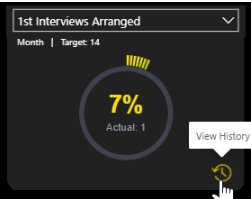
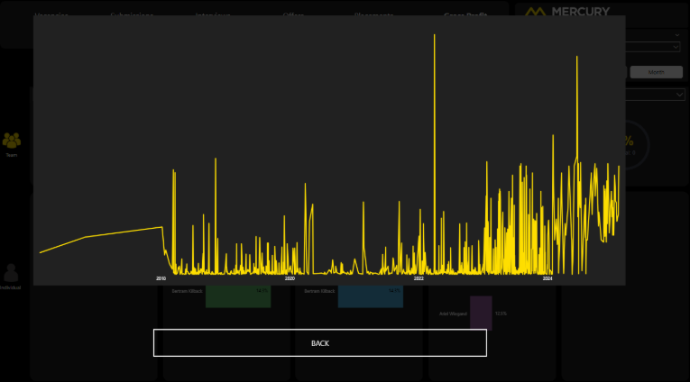
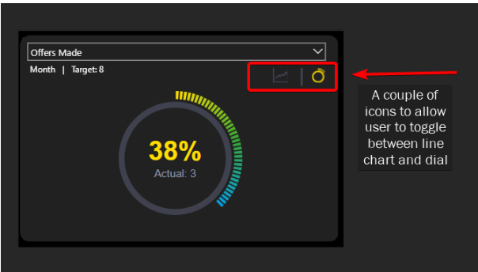
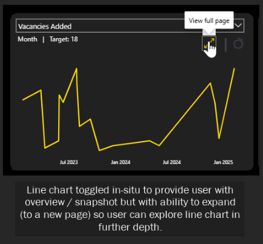
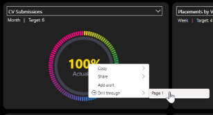
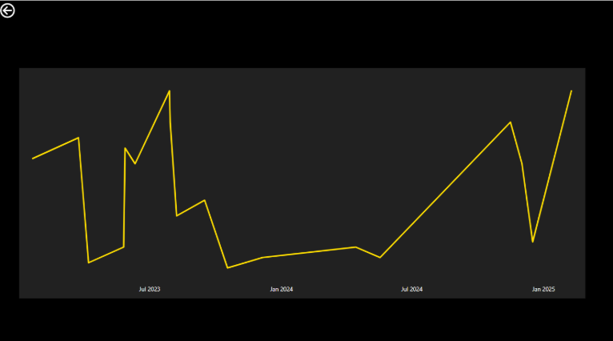
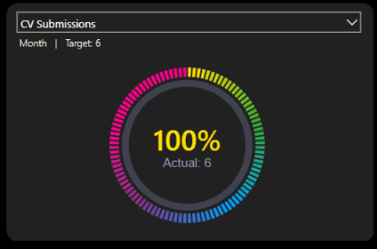
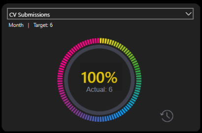

Context
We had a Power BI report which showed an individuals performance against target for a user-selected KPI. The limitation was that the report was only able to show performance for the current period. So how they were doing against this week's or month's target.
The ask was to investigate what is possible in terms of being able to see the individual's historic performance over time for the KPI in question.
Below is a write up of the investigation carried out:
Background
When we look at a team or an individual's actual vs target position, we are only able to show the current timeframe. We have no sense of history and how, for example, an individual did last month, last quarter, last year.
This makes contextualising the current timeframe performance difficult. Is for example a figure of 70% of target better than previous timeframes or worse than previous timeframes for this individual?
This problem is less about visual design and more about what evaluation context can (and cannot) be passed between report elements.
Investigation
There are a number of designs we could implement to achieve this but all of them boil down to two main implementations both with the advantages and disadvantages:
1. Using a Button
This could take several forms. For example:
View History
A button with a View History tooltip and icon which leads to a pop-up showing the historical performance:

which would then lead to a pop-up displaying a line chart showing performance over time:

Toggle Buttons
Another option could be to have a couple of buttons at the top of the visual and allow the user to toggle between the dial and a line chart:


Advantages
- Complete flexibility of how we construct this trigger from a UI point of view.
- Could be a pop up on the existing page or navigation to a new page.
Disadvantages
- No way to pass the evaluation context to the button.
So the button will not know which of the KPIs you are looking at. This information would have to be statically held in the destination page using bookmarks.
In other words, we would need at least 15 bookmarks - one for each distinct KPI (and also potentially three for each KPI depending on whether the individual has a daily, weekly or monthly target).
We would also need different destinations and therefore different bookmarks depending on whether the user is navigating from the team or individual context.
The maintenance challenge and performance implications of this solution (the report would have many pages which may make loading and rendering take a not insignificant amount of time) would make it unfavourable as a solution.
2. Using drillthrough
We can refactor how we show the performance target in each of the dials. Instead of having it as an attribute of the visual, we could superimpose a card visual (or a one-cell table visual) on top of the dial visual.
This would then give us the ability to drillthrough to a separate page showing actual vs target over time.

Advantages
- This only requires one additional page. The drillthrough functionality brings the filter context of the initial page to the destination page so that the visuals reflect this context.
This means whether we are drilling through from the individual page or the team page, the destination page would be the same. It is the filters which are passed from the originating page which provide the context of what is shown in the visual.
Disadvantages
- The user experience is not as friendly / intuitive as clicking on a button. It involves right-clicking on a metric and navigating a menu.
This user experience could be improved somewhat by adding a drillthrough button. This would work as follows:
Step 1
The dial would be shown as normal by default:

Step 2
The user clicks on the percentage and the view history icon appears:

Step 3
Clicking this button would take you to a drillthrough page.
Note
A couple of things to be aware of:
- The drillthrough method requires the user to drill through on a metric - I have chosen the percentage of target figure. It could equally be achieved by drilling through on the actual figure.
- In order to implement a drillthrough button, the percentage measure is actually within a table visual which has been shrunk to display only one cell. This is because when the user selects a cell from a table visual, this has the impact of filtering the data which the drillthrough button "listens" for and becomes enabled when the data has been sliced in this way. Conversely clicking on a card does not affect the underlying dataset. A bit of a hacky solution.
Other Options
The only other option considered (and discounted) was using a custom tooltip.
This provides the user with a snapshot of the performance history only. There is no means for them to interact with the tooltip by, for example, changing the timeframe of the line chart, cross-filtering or exporting the data.
In addition adding a custom tooltip to a custom visual (which is what the dials are) requires further investigation on how to do and was outside the scope of this work.
Final Thoughts
I think it would be beneficial to do a small spike (1/2 - 1 day) when we have the historic data within the model to check that the above remains true and there are no "gotchas" with how the real data would interact with the above theory.
In terms of what could actually be displayed, it would depend on what is the key thing of interest - does the user need to know the actuals and the targets (so two metrics) over time or just the percentage of target achieved over various timeframes? This would inform the decision of what to show visually.
While button-driven UX appears far more intuitive, it breaks down quickly due to lack of context awareness. Drillthrough despite a less polished interactive method, aligns with the semantic model and scales cleanly.
What Happened Next?
The team decided to implement the drillthrough button approach. The drillthrough page then displayed a column chart (one column per week or month depending on target cadence) rather than the line chart shown in the mockups above.